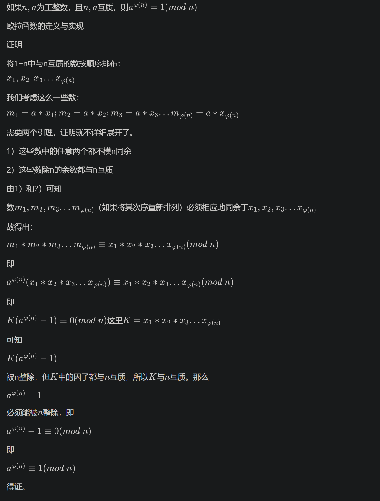

数学定理¶
费马小定理¶
假如 a 是一个整数， p 是一个质数，那么 \(a^ {p}-a\) 是 p 的倍数，也可以表示为 \(a^ {p} \equiv a (\mod p)\) 。
如果 a 不是 p 的倍数的话，则 \(a^ {p-1} \equiv 1 (\mod p)\) 。
Lucas定理¶
卢卡斯（Lucas）定理 $ C_{ n }^{ m }\equiv C_{ n/p }^{ m/p }.C_{ n\mod p }^{ m\mod p }( mod p)$, 其中p为质数。
威尔逊定理¶
\((p-1)! \equiv -1\pmod p\) 是 p 为素数 的 充分必要条件。
例题 #1 YAPTCHA¶
求出下列式子的答案

其中[x]为对x向下取整
100%的数据：T≤103，1≤n≤106
对于每一组询问，输出答案。
对威尔逊定理进行变形，得到若p为质数，则\((p-1)!+1==0\pmod p\)，此时求和式的第一项整除，否则不能整除。如果可以整除，那么第二项就比第一项小1.否则在整数部分两部分相同，又因为最外层有一个向下取整，所以此时值为0.
因此就是要我们求 \(1\sim n\)中又多少个k满足3k+7为质数。
欧拉定理¶

欧拉定理¶
若 \(\gcd(a, m) = 1\)，则 \(a^{\varphi(m)} \equiv 1 \pmod{m}\)。
是不是看着非常抽象？
例题 #1 The Luckiest Number¶
【题目描述】
中国人认为“8”是幸运数字。Bob 也喜欢数字“8”。此外，Bob 有自己的幸运数字 \(L\)。现在，他想构造出自己的最幸运的数字，即所有仅由数字“8”组成且是 \(L\) 的倍数的正整数中的最小值。
【输入格式】
多个测试用例组成。每个测试用例包含一行，其中包含 \(L\)（\(1 ≤ L ≤ 2,000,000,000\)）。
最后一个测试用例后跟着一行，其中包含零。
【输出格式】
对于每个测试用例，输出一行，包含测试用例编号（从 \(1\) 开始），后跟一个整数，该整数是 Bob 最幸运的数字的长度。如果 Bob 无法构造他最幸运的数字，则输出零。翻译来自于：ChatGPT
我们发现我们要直到长度最短的连续的8，使得这个数n是m的倍数。
那么如果n是某个数字的次幂-1，那么我们就想到了一个定理：欧拉定理。
欧拉定理就联系起了一个数的次幂和它是哪个数的倍数的关系。
那么我们可以写作\(n=k^\varphi(m)-1\equiv 0\pmod m\)。
但是事实上我们发现n大多数情况下都不是摸个数的次幂-1，但是我们可以吧n分成含有某个数字的次幂的形式。
我们定义n(i)为i个8连接起来的数字，那么有\(n(i)=\frac{10^i-1}{9}\times 8\)。因此我们有
\(n(i)+1=\frac{10^i-1}{9}\times 8+1\equiv 1\pmod m\\{10^i-1}\equiv 0\pmod m\)
因此i显然等于\(\varphi(m)\)。注意要判断无解。
其实上面的有一点问题，比如说n(1)就不会出现在答案中。这是因为我们要求乘了8后是m的倍数，所以分数部分只需要是\(m/\gcd(m,8)\)即可。
那么那个\(\div 9\)就不用管了吗？事实上是要的！也许有人会在这里有疑惑，那么我们就这样来想：如果不考虑这个9，那么我们最后得出来的答案不是9的倍数怎么办？
因此最后我们的模数变为了\(\frac{9m}{\gcd(8,m)}\)
但是注意，我们通过欧拉定理求出来的只不过是一个可行解。要得到最小的解，我们有如下引理
若 a,n 互质，则满足 \(a^x≡1 \pmod n\) 的最小正整数解为 φ(n) 的约数。
枚举即可。
/*
Keyblinds Guide
###################
@Ntsc 2024
- Ctrl+Alt+G then P : Enter luogu problem details
- Ctrl+Alt+B : Run all cases in CPH
- ctrl+D : choose this and dump to the next
- ctrl+Shift+L : choose all like this
- ctrl+K then ctrl+W: close all
- Alt+la/ra : move mouse to pre/nxt pos'
*/
#include <bits/stdc++.h>
#include <queue>
using namespace std;
#define rep(i, l, r) for (int i = l, END##i = r; i <= END##i; ++i)
#define per(i, r, l) for (int i = r, END##i = l; i >= END##i; --i)
#define pb push_back
#define mp make_pair
#define int long long
#define ull unsigned long long
#define pii pair<int, int>
#define ps second
#define pf first
// #define innt int
#define itn int
// #define inr intw
// #define mian main
// #define iont int
#define rd read()
int read(){
int xx = 0, ff = 1;
char ch = getchar();
while (ch < '0' || ch > '9') {
if (ch == '-')
ff = -1;
ch = getchar();
}
while (ch >= '0' && ch <= '9')
xx = xx * 10 + (ch - '0'), ch = getchar();
return xx * ff;
}
void write(int out) {
if (out < 0)
putchar('-'), out = -out;
if (out > 9)
write(out / 10);
putchar(out % 10 + '0');
}
#define ell dbg('\n')
const char el='\n';
const bool enable_dbg = 1;
template <typename T,typename... Args>
void dbg(T s,Args... args) {
if constexpr (enable_dbg){
cerr << s;
if(1)cerr<<' ';
if constexpr (sizeof...(Args))
dbg(args...);
}
}
#define zerol = 1
#ifdef zerol
#define cdbg(x...) do { cerr << #x << " -> "; err(x); } while (0)
void err() { cerr << endl; }
template<template<typename...> class T, typename t, typename... A>
void err(T<t> a, A... x) { for (auto v: a) cerr << v << ' '; err(x...); }
template<typename T, typename... A>
void err(T a, A... x) { cerr << a << ' '; err(x...); }
#else
#define dbg(...)
#endif
const int N = 5e5 + 5;
const int INF = 1e9;
const int M = 1e7;
const int MOD = 1e9 + 7;
int getPhi(int x){
int res=x;
for(int i=2;i*i<=x;i++){
if(x%i==0){
res=res/i*(i-1);
while(x%i==0)x/=i;
}
}
if(x>1)res=res/x*(x-1);
return res;
}
int TT=0;
inline int ksm(itn a,itn b,int MOD){
int res=1;
while(b){
if(b&1)res=res*a%MOD;
b>>=1;
a=a*a%MOD;
}
return res;
}
void solve(){
int n=rd;
if(n==0)exit(0);
n=n/__gcd(8ll,n)*9;
int phi=getPhi(n);
// cdbg(n,getPhi(n));
itn ans=INF;
if(__gcd(10ll,n)!=1){
printf("Case %lld: %lld\n",++TT,0ll);
// cdbg("fake");
return ;
}
for(int i=1;i*i<=phi;i++){
if(phi%i)continue;
if(ksm(10,i,n)==1%n)ans=min(ans,i);
if(ksm(10,phi/i,n)==1%n)ans=min(ans,phi/i);
}
printf("Case %lld: %lld\n",++TT,ans);
}
signed main() {
// freopen("P2619_3.in","r",stdin);
// freopen("center.out","w",stdout);
int T=1;
while(T){
solve();
}
return 0;
}
扩展欧拉定理¶
定义 \(a^b \equiv \begin{cases} a^{b \bmod \varphi(m)}, &\gcd(a,m) = 1, \\ a^b, &\gcd(a,m)\ne 1, b < \varphi(m), \\ a^{(b \bmod \varphi(m)) + \varphi(m)}, &\gcd(a,m)\ne 1, b \ge \varphi(m). \end{cases} \pmod m\)
欧拉定理：若 \(\gcd(a, m) = 1\)，则 \(a^{\varphi(m)} \equiv 1 \pmod{m}\)。
我们把ex欧拉的第一个性质拿出来，即\(a^b \equiv a^{b \bmod \varphi(m)} \pmod m, \gcd(a,m) = 1\)，那么我们知道，我们\(a^b \pmod m\)的循环节就应该是\(\varphi(m)\)。所以一个方法就是我们暴力枚举\(b=0\sim \varphi(m)\)即可。复杂度为 O(m)。
证明
考虑第一条，因为我们有 若\(\gcd(a, m) = 1\)，则 \(a^{\varphi(m)} \equiv 1 \pmod{m}\)，所以就有$ a^{b \bmod \varphi(m)}\times (a{\varphi(m)})k \equiv a^{b \bmod \varphi(m)}, \gcd(a,m) = 1\(，当k取特定值时，a\)^{b \bmod \varphi(m)}\times (a{\varphi(m)})k\(就是\)a^b$。
第二条代表幂已经\(<\varphi(m)\)了，不可以继续降幂。
第三条是什么呢？我们这里感性理解一下
若p_i^{b \bmod \varphi(m)}\equiv p_i^b，那么\((\prod p_i)^{b \bmod \varphi(m)}\equiv\prod p_i^{b \bmod \varphi(m)}\equiv\prod p_i^b\equiv(\prod p_i)^b\)。但是这里要求p_i和m互质。
如果a和m不互质呢？那么我们就可以写成\(a=\prod p_i\)。这里的p_i都是质数，p_i可重复。注意，因为a,m不互质，所以有一些p_i 是m的因数。把与m互质的p_i 提出来就看哟i套用上面的式子，那么怎么样处理因数呢？
请参考下文。
扩展欧拉定理的应用¶
给你三个正整数，\(a,m,b\)，你需要求：\(a^b \bmod m\)
【数据范围】 对于 \(100\%\) 的数据，\(1\le a \le 10^9\)，\(1\le b \le 10^{20000000}，1\le m \le 10^8\)。
我们首先求出 \(\varphi (m)\)。对于求一个数字的phi值，我们可以直接根据定义来求解。
然后我们就可以在输入b时顺便对b取模了。注意次数在对phi取模后还要加上一个phi。不是对\(2\times \varphi\)取模！！
int getphi(int x)
{
int ans=1,num=1;
for(int i=2;i*i<=x;i++)
{
if(!(x%i))
{
num=i-1,x/=i;
while(!(x%i)) num=num*i,x/=i;
ans=num*ans;
}
}
if(x!=1) ans=ans*(x-1);
return ans;
}
int cal(string s,int MOD){
int res=0,f=0;
for(auto c:s){
// dbg(c);
res=(res*10+c-'0');
if(res>=MOD)res%=MOD,f=1;
}
if(!f)return res;
return res+MOD;
}
string s;
void solve(){
a=rd,MOD=rd;
cin>>s;
int b=cal(s,getphi(MOD));
cout<<ksm(a,b)<<endl;
}
signed main() {
int T=1;
while(T--){
solve();
}
return 0;
}
裴蜀定理¶
对于不定方程 $ ax+by=m\(, 其有解的充要条件为\)\gcd(a,b)|m$
例题 #1 Dora and C++¶
Dora 刚学了编程语言C++！
但是，她一点也不明白C++的含义。 她认为C++是两种在长度为 \(n\) 的数组 \(c\) 上的加法操作。Dora 有两个整数 \(a\) 与 \(b\) 。 每一次操作，她可以选择一件事情去做。
-
选择一个整数 \(i\) ，其中 \(1 \leq i \leq n\) ，然后把 \(c_i\) 加上 \(a\) 。
-
选择一个整数 \(i\) ，其中 \(1 \leq i \leq n\) ，然后把 \(c_i\) 加上 \(b\) 。
注意，这里 \(a\) 与 \(b\) 是常数，且他们可以相同。
让我们规定一个数组的值域 \(d\) 为 \(\max(d_i) - \min(d_i)\) 。仅举几例：数组 \([1, 2, 3, 4]\) 的值域是 \(4 - 1 = 3\) ，数组 \([5, 2, 8, 2, 2, 1]\) 的值域是 \(8 - 1 = 7\) ， 数组 \([3, 3, 3]\) 的值域是 \(3 - 3 = 0\) 。
经过若干次操作 (可能是 \(0\) )， Dora 计算出了新数组的值域。 请你帮助 Dora 最小化其值，但是自从 Dora 爱上了仅凭自己探索，你只需要告诉她最小化后的值。
首先由贝祖定理得我们的操作实际上说对数字任意加减gcd(a,b)。
将a排序。
那么我们先将所有数字对gcd取模，先将max-min作为备选答案。然后考虑每一对(i,i+1)。我们发现我们将[1,i]都加上gcd后的答案可能更加优秀，因此用a_{i}-a_{i+1}+gcd更新答案。

// Problem: C. Dora and C++
// Contest: Codeforces - Codeforces Round 969 (Div. 2)
// URL: https://codeforces.com/contest/2007/problem/C
// Memory Limit: 256 MB
// Time Limit: 2000 ms
//
// Powered by CP Editor (https://cpeditor.org)
#include<bits/stdc++.h>
//#define int long long
#define fi first
#define se second
#define PII pair<int, int>
using namespace std;
const int N = 2e5 + 10, M = 1e6 + 10, mod = 1e9 + 7, INF = 0x3f3f3f3f;
int n, m, q, ans, s[N], dp[N];
signed main()
{
ios::sync_with_stdio(0), cin.tie(0), cout.tie(0);
int T; cin >> T;
while(T --)
{
int a, b; cin >> n >> a >> b;
int now = __gcd(a, b);
for(int i = 1; i <= n; i ++) {cin >> s[i]; s[i] %= now;}
sort(s + 1, s + n + 1);
ans = s[n] - s[1];
for(int i = 2; i <= n; i ++) ans = min(ans, s[i - 1] - s[i] + now);
cout << ans << '\n';
}
return 0;
}
中国剩余定理¶

向量的运算¶
以下是向量运算的一些基本概念：
-
向量的加法和减法：
-
加法：两个向量相加，就是将它们对应的坐标相加。如果向量a和向量b都是n维向量，那么它们的和向量c的第i个分量是a的第i个分量加上b的第i个分量。
-
减法：向量减法可以看作是向量加法的逆运算，即向量a减去向量b等于向量a加上向量b的相反向量。
-
-
向量的数乘：
-
标量乘法：一个标量与一个向量相乘，就是将这个标量乘以向量的每个分量。
-
向量数乘：一个向量与一个标量相乘，得到的结果是一个新向量，新向量的每个分量都是原向量对应分量的标量乘积。
-
-
向量的点乘：
- 点乘：两个向量a和b的点乘，其结果是一个标量，等于这两个向量的对应分量相乘
综合练习¶
[SDOI2010] 古代猪文
iPig 在大肥猪学校图书馆中查阅资料，得知远古时期猪文文字总个数为 \(n\)。当然，一种语言如果字数很多，字典也相应会很大。当时的猪王国国王考虑到如果修一本字典，规模有可能远远超过康熙字典，花费的猪力、物力将难以估量。故考虑再三没有进行这一项劳猪伤财之举。当然，猪王国的文字后来随着历史变迁逐渐进行了简化，去掉了一些不常用的字。
iPig 打算研究古时某个朝代的猪文文字。根据相关文献记载，那个朝代流传的猪文文字恰好为远古时期的 \(1/k\)，其中 \(k\) 是 \(n\) 的一个正约数（可以是 \(1\) 或 \(n\)）。不过具体是哪 \(1/k\)，以及 \(k\) 是多少，由于历史过于久远，已经无从考证了。
iPig 觉得只要符合文献，每一种 \(k|n\) 都是有可能的。他打算考虑到所有可能的 \(k\)。显然当 \(k\) 等于某个定值时，该朝的猪文文字个数为 \(n/k\)。然而从 \(n\) 个文字中保留下 \(n/k\) 个的情况也是相当多的。iPig 预计，如果所有可能的 \(k\) 的所有情况数加起来为 \(p\) 的话，那么他研究古代文字的代价将会是 \(g^p\)。
现在他想知道猪王国研究古代文字的代价是多少。由于 iPig 觉得这个数字可能是天文数字，所以你只需要告诉他答案除以 \(999911659\) 的余数就可以了。
输入格式
一行两个正整数 \(n,g\)。
输出格式
输出一行一个整数表示答案。
- 对于 \(100\%\) 的数据，\(1\le n,g \le 10^9\)。
首先用形式化的语言表述处我们要求的是什么
\(g^{\sum_{k|n}C(n,n/k)}\bmod {999911659}\)
如果我们直接求p，我们发现无论用什么方法都难以解决C(n,m)，n,m都在10^9的世界范围且模数也很大的问题。所以我们考虑从整体入手。
我们注意到p本身也很大，所以我们考虑将p缩小一下。考虑扩展欧拉定理，因为模数和g互质，所以\(g^{\sum_{k|n}C(n,n/k)}\bmod {999911659}=g^{\sum_{k|n}C(n,n/k)\bmod {999911658}}\bmod {999911659}\)
欧拉定理： a,m互质时，\(a^b\equiv a^{b\bmod m-1}\pmod {m}\)
现在我们再来求p，发现还是横棘手，所以我们考虑将模数缩小
那么怎么样缩小呢？我们999911658=2×3×4679×35617，然后再这4给模数下分别求出C。于是问题变成了：我们知道x在4个两两互质的模数下的余数，求最小的x（即求x在将4个模数的积作为模数的意义下的唯一解。）
很明显可以使用crt来写。
CRT 给定模数两两互质的同余方程组x\equiv a_i\pmod b_i，答案为\(\sum a_i\times B/b_i\times (B/b_i)^{-1}\)在\bmod b_i意义下。\(B=\prod b_i\)
其中，为了求\((B/b_i)^{-1}\)在\(\bmod b_i\)意义下，我们注意到\(b_i\)不一定是质数，所以我们有可以列出同余方程
\((B/b_i)^{-1}\times (B/b_i)+b_iy= 1\)
形式同xa+by=1。又因为这里的gcd(a,b)=1（即\(\gcd(B/b_i,b_i)\)），所以恰好是\(xa+by=\gcd(a,b)\)的形式。
我们可以直接使用exgcd求解
exGCD \(ax+by=\gcd(a,b)=\gcd(b,a\bmod b)=bx'+(a-b[a/b])y'=ay'+b(x'-[a/b]y')\) 得到回溯式\(x=y',y=(x'-[a/b]y')\)
至于在那4个模数意义下求C，我们用Lucas定理
卢卡斯（Lucas）定理 $ C_{ n }^{ m }\equiv C_{ n/p }^{ m/p }C_{ n\mod p }^{ m\mod p }( mod p)$, 其中p为质数。 其中C_{ n/p }^{ m/p }可以递归计算，另外一个直接计算即可。
注意在计算\(C_n^m\)时，inv不可以预处理。因为模数<预处理数的最大值，所以预处理的inv的某个前缀会全变成0，是错误的。应该实时用快速幂（费马小定理）计算。
费马小定理 \(i^{p-1}\equiv 1\pmod p\)，两边同时除去一个i得到i的逆元，为\(i^{p-2}\)
因此我们就可以计算了。
/*
Keyblinds Guide
###################
@Ntsc 2024
- Ctrl+Alt+G then P : Enter luogu problem details
- Ctrl+Alt+B : Run all cases in CPH
- ctrl+D : choose this and dump to the next
- ctrl+Shift+L : choose all like this
- ctrl+K then ctrl+W: close all
- Alt+la/ra : move mouse to pre/nxt pos'
*/
#include <bits/stdc++.h>
#include <queue>
using namespace std;
#define rep(i, l, r) for (int i = l, END##i = r; i <= END##i; ++i)
#define per(i, r, l) for (int i = r, END##i = l; i >= END##i; --i)
#define pb push_back
#define mp make_pair
#define int long long
#define ull unsigned long long
#define pii pair<int, int>
#define ps second
#define pf first
// #define innt int
#define itn int
// #define inr intw
// #define mian main
// #define iont int
#define rd read()
int read(){
int xx = 0, ff = 1;
char ch = getchar();
while (ch < '0' || ch > '9') {
if (ch == '-')
ff = -1;
ch = getchar();
}
while (ch >= '0' && ch <= '9')
xx = xx * 10 + (ch - '0'), ch = getchar();
return xx * ff;
}
void write(int out) {
if (out < 0)
putchar('-'), out = -out;
if (out > 9)
write(out / 10);
putchar(out % 10 + '0');
}
#define ell dbg('\n')
const char el='\n';
const bool enable_dbg = 1;
template <typename T,typename... Args>
void dbg(T s,Args... args) {
if constexpr (enable_dbg){
cerr << s;
if(1)cerr<<' ';
if constexpr (sizeof...(Args))
dbg(args...);
}
}
#define zerol = 1
#ifdef zerol
#define cdbg(x...) do { cerr << #x << " -> "; err(x); } while (0)
void err() { cerr << endl; }
template<template<typename...> class T, typename t, typename... A>
void err(T<t> a, A... x) { for (auto v: a) cerr << v << ' '; err(x...); }
template<typename T, typename... A>
void err(T a, A... x) { cerr << a << ' '; err(x...); }
#else
#define dbg(...)
#endif
const int N = 3e5 + 5;
const int INF = 1e18;
const int M = 1e7;
const int MOD =999911659;
int b[5]={0,2,3,4679,35617};
int a[5];
int fac[6][N],inv[6][N];
int ksm(int a,int b,int p){
int res=1;
while(b){
if(b&1)res=res*a%p;
b>>=1;
a=a*a%p;
}
return res;
}
void init(){
for(int k=1;k<=4;k++){
fac[k][0]=1;
for(int i=1;i<N;i++){
fac[k][i]=fac[k][i-1]*i%b[k];
}
// inv[k][N-1]=ksm(fac[k][N-1],b[k]-2,b[k]);
// for(int i=N-1;i;i--){
// inv[k][i-1]=inv[k][i]*i%b[k];
// }
}
}
int C(int a,int b,int P,int i){
if(a<b)return 0;
int s=fac[i][a]*ksm(fac[i][b],P-2,P)%P*ksm(fac[i][a-b],P-2,P)%P;
// cdbg(a,b,P,s,fac[i][a],inv[i][b],inv[i][a-b]);
return s;
}
itn lucas(int n,int m,int P, int i){
// cdbg("lc",n,m,P);
if(m==0)return 1;
return lucas(n/P,m/P,P,i)*C(n%P,m%P,P,i)%P;
}
itn x,y;
int exgcd(int a,int b,int &x,int &y){
if(b==0){
x=1,y=0;
return a;
}
int t=exgcd(b,a%b,x,y);
int tx=x,ty=y;
x=ty;
y=tx-(a/b)*ty;
return t;
}
int c[6],d[6];
int calC(int n,int m){
// cdbg("calC",n,m);
for(int i=1;i<=4;i++){
a[i]=lucas(n,m,b[i],i);
// cdbg(a[i]);
}
for(int i=1;i<=4;i++){
d[i]=(MOD-1)/b[i];
exgcd(d[i],b[i],x,y);
c[i]=d[i]*x;
}
int res=0;
for(int i=1;i<=4;i++){
res+=c[i]*a[i]%(MOD-1);
res=(res%(MOD-1)+(MOD-1))%(MOD-1);
}
// cdbg("C",n,m,res);
return res;
}
void solve(){
init();
int p=0;
int n=rd,g=rd;
if(g%MOD==0){
cout<<0<<endl;
return ;
}
for(itn i=1;i*i<=n;i++){
// cdbg(i);
if(n%i)continue;
p+=calC(n,n/i);
p%=MOD-1;
if(i*i==n)continue;
p+=calC(n,i);
p%=MOD-1;
p=(p%(MOD-1)+(MOD-1))%(MOD-1);
}
// cdbg("OK",g,p);
cout<<ksm(g,p,MOD)<<endl;
}
signed main() {
// freopen(".in","r",stdin);
// freopen(".in","w",stdout);
int T=1;
while(T--){
solve();
}
return 0;
}